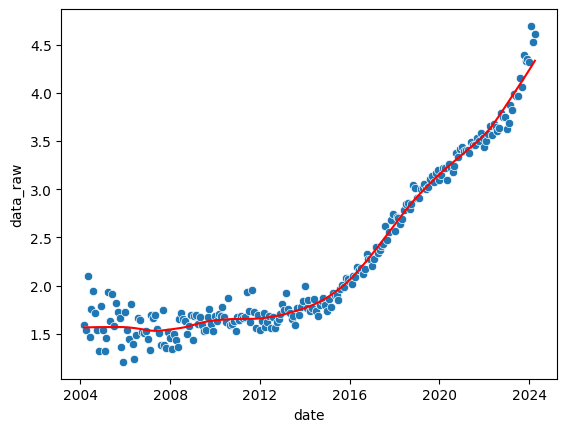
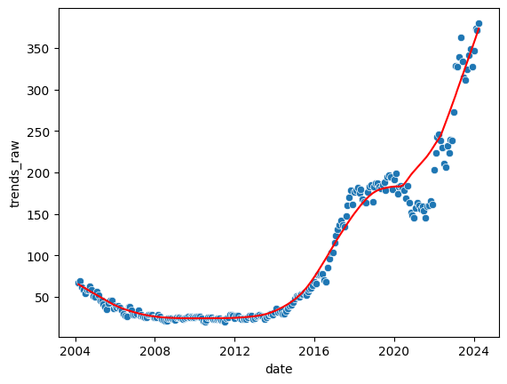
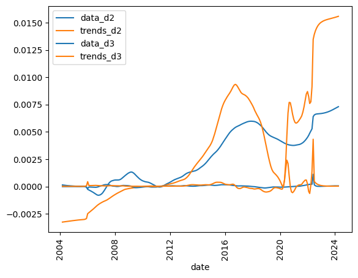

Digital Historical Unessay Proposal
Jirawut Thongraar
Investigate relationships between AI popularity amoung the public vs popularity as research topic
AI popularity amoung the public as a proxy of how "good" AI is
Frequency of AI-related topics amoung arXiv papers

Trends of AI-related topics as searched on Google

So we just compare the derivatives and be done?

Not so fast...
I want to use actual statistical test and not "eyeball statistics"
And the results have a very suspicious p-value?
If anyone knows why this is, do let me know
Extra
- Data smoothing algorithm is LOWESS
- Granger causality test if two time series are "granger cause" (i.e., one have predictive effect on the other)
- If p-value is low enough to reject null-hypothesis, then we can conclude that one time series effect the other.
- Granger causality test must be done on stationary data (tested using Adfuller). Only second-order derivative pass this test.
- The p-value in previous slide is suspicious because it almost imposible to be zero. p=0.0027 is also suspicious